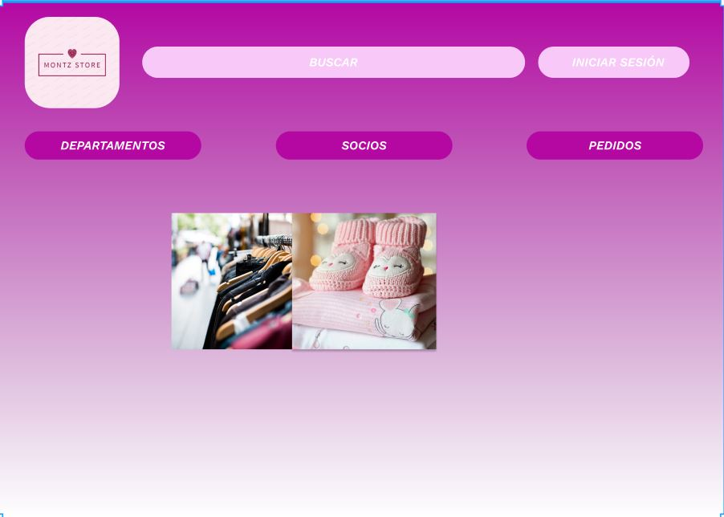
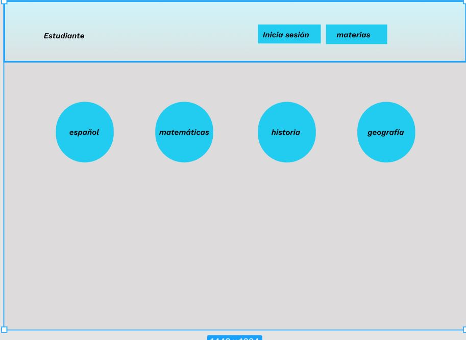

Inicio
Sobre mi
Proyectos
Contacto
Estos son algunos proyectos en los que estoy trabajando mientras avanzo en el bootcamp Generation México, son proyectos pequeños que poco a poco van tomando forma en la medidad en que voy adquiriendo nuevos conocimientos y habilidades, son dos cosas que me llama la atención desarrollar por el impacto que pueden llegar a tener.
MontzStore
El primero se trata de montz store es una tienda virtual en donde mujeres emprendedoras y madres solteras puedan anunciar sus productos y servicios asi como hacer un red de contactos con proveedores de diferentes marcas. Con el fin de que puedan hacer crecer sus PYME y pocicionar una marca propia en un mercado global.

Estudiante
El segundo proyecto es algo mas personal, se trata de "estudiante" una página web que sera una red de apoyo estudiantil en el que podran encontrar recursos como infografías, resumenes, cuestionarios, cuadros sinópticos que ayuden a estudiantes a repasar los temas aprendidos en clase. Podran formar grupos de estudio en donde puedan interactuar. Esta idea surge en pandemia después de ayudar a algunos familiares dando pequeñas asesorias a sus hijos vi la falta de herramientas digitales de estudio para los estudiantes.
